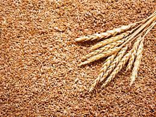
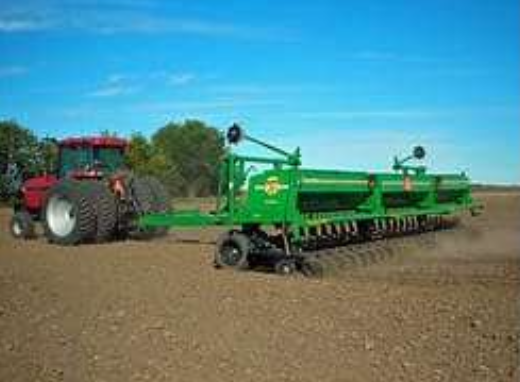
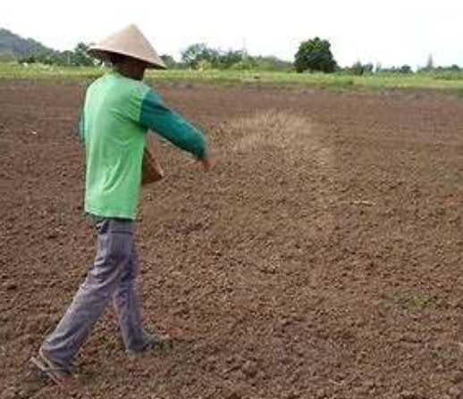
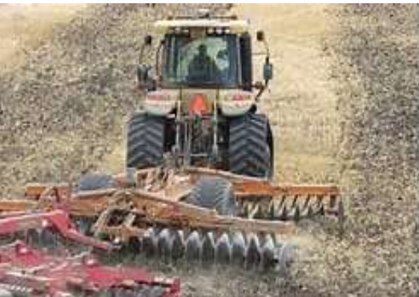
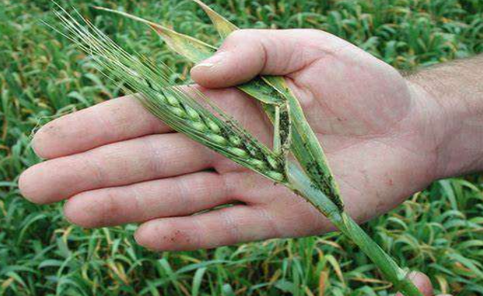

GENERAL INFORMATION
Wheat is grown on 13 percent of the cropped area of India. Next to rice, wheat is the most important food-grain
of India and is the staple food of millions of Indians, particularly in the northern and north-western parts of
the country.
It is rich in proteins, vitamins and carbohydrates and provides balanced food. India is the fourth largest
producer of wheat in the world after Russia, the USA and China and accounts for 8.7% of the world’s total
production of wheat.

CLIMATE
Temperature
21-26°C
Rainfall
75 cm (max)
20-25 cm (min) Sowing Temperature
18-22°C
Harvesting Temperature
20-25°C
SOIL
Soils with a clay loam or loam texture, good structure and moderate water holding capacity are
1
ideal for wheat cultivation. Heavy soil with good drainage is suitable for wheat cultivation under dry
conditions.
POPULAR VARIETIES WITH THEIR YIELD
PBW 752:
Late variety. This variety is suitable for sowing in irrigated conditions.
It gives an average yield of
19.2qtl/acre.
PBW 1 Zn:
The plant of this variety attains the height of 103 cm. the crop is ready
to harvest in 151 days. It
gives an average of 22.5 qtl/acre of crop yield.
UNNAT PBW 343: Suitable for irrigated and timely sown areas. Ready to harvest in 155 days. It is resistant to
lodging, water logging conditions. It is also resistant to karnal bunt and tolerant to blight. It gives average
yield of 23.2 qtl/acre.
WH 542:
It is suitable for timely sown, irrigated areas. Ready to harvest in 135-145
days. It is resistant to
stripe rust, leaf rust and karnal bunt. It give average yield of 20 qtl/acre.
PBW 725:
It is dwarf variety, released by Punjab Agriculture University. It is
suitable for timely sown
irrigated areas. It is resistant to yellow and brown rust. Its grains are amber, hard and medium bold. It is
ready to harvest in 155 days. It gives average yield of 23 qtl/acre.
PBW 677:
Ready to harvest in 160 days. It gives average yield of 22.4 qtl/acre.
HD 2851: This variety is suitable for timely sowing and is grown in irrigated areas. The variety matures in
126-134 days and the plant attains the height of 80-90cm.
WHD-912:
It is a double dwarf Durum variety which is used for Bakery in Industry.
Protein content 12%. Resistant
Yellow & Brown and rust as well as karnal bunt. The yield is near about 21 qtl/ acre.
HD 3043:
Gives average yield of 17.8 qtl/acre. It has shown a high level of
resistance against stripe rusts and
leaf rust. It has the higher value of bread loaf volume (cc), bread quality score."
WH 1105:
Developed by Punjab Agriculture University. It is a double dwarf variety
with an average plant height
of 97 cm. Its grains are amber, hard, medium bold and lustrous. It is resistant to yellow rust and brown rust
but susceptible to karnal bunt and loose smut diseases. It matures in about 157 days and its average grain yield
is 23.1 quintals per acre.
PBW 660:
Developed by Punjab Agriculture University released for cultivation under
rain fed conditions in the
Punjab state. It is a dwarf variety with an average plant height of 100 cm. Its grains are amber, hard, bold and
lustrous with very good chapatti quality. It is resistant to yellow and brown rusts but susceptible to lose smut
disease. It matures in about 162 days and its average grain yield is 17.1 quintals per acre.
PBW-502:
Developed by Punjab Agricultural University. Suitable for timely sown
irrigated conditions. It is
resistant to leaf rust and stripe rust.
HD 3086(PusaGautam):
It gives average yield of 23 qtl/acre. It is resistant to
yellow rust
and brown rust. It
meets all the criteria for superior bread making qualities.
HD 2967:
It is double dwarf variety with an average plant height of 101 cm. The
ears
are medium dense. It is
resistant to yellow and brown rust but susceptible to karnal bunt and loose smut diseases. It takes
about 157
days to mature. The yield is 21.5 qtl/acre.
DBW17:
The height of the plant is 95 cm. Grains are amber hard, medium bold
and lustrous. It is susceptible to
new races of yellow rust and moderately resistant to brown rust. It matures in 155 days. The average
yield is 23
qtl/acre.
PBW 621:
It is grown in all areas of Punjab. It gets ready for harvesting
within 158 days. It is resistant to
yellow and brown rusts diseases. It has an average height of 100cm.
UNNAT PBW 550:
It is grown in all areas of Punjab. It gets ready for
harvesting within 145 days. It is resistant
to yellow and brown rusts diseases. It has an average height of 86 cm. It gives an average yield of 23
qtl/acre.
TL 2908:
It is grown in all areas of Punjab. It gets ready for harvesting
within 153 days. It is resistant to
mostly all major diseases. It has an average height of 113 cm.
PBW 175:
It is grown in all areas of Punjab. It gets ready for harvesting
within 165 days. It is resistant to
Rust and Karnal bunt diseases. It has an average height of 110 cm.
PBW 527:
It is grown in all areas of Punjab. It gets ready for harvesting
within 160 days. It is resistant to
yellow and brown rust diseases. It has an average height of 100 cm.
WHD 943:
It is grown in all areas of Punjab. It gets ready for harvesting
within 154 days. It is resistant to
yellow and brown rust diseases. It has an average height of 93 cm.
PDW 291:
It is grown in all areas of Punjab. It gets ready for harvesting
within 155 days. It is resistant to
yellow and brown rust, loose smut and flag smut diseases. It has an average height of 83 cm.
PDW 233:
It is grown in all areas of Punjab. It gets ready for harvesting
within 150 days. It is resistant to
yellow and brown rust, loose smut and karnal bunt diseases. It has an average height of 98 cm.
PBW 590:
It is grown in all areas of Punjab. It gets ready for harvesting
within 128 days. It is resistant to yellow and brown rusts diseases. It has an average height of 80cm.
PBW 509:
It is grown in all areas of Punjab except sub-mountainous region.
It gets ready for harvesting within
130 days. It is resistant to yellow and brown rusts diseases. It has an average height of 85cm.
PBW 373:
It is grown in all areas of Punjab. It gets ready for harvesting
within 140 days. It is resistant to
brown rusts diseases. It has an average height of 90 cm.
RAJ-3765:
It matures in 120-125 days. Heat tolerant and suitable for zero
tillage, Susceptible to brown rust,
moderately susceptible to stripe rust and karnal bunt. The yield is near about 21 qtl/ acre.
UP-2338:
It matures in 125-130 days. It is susceptible to leaf rust and
moderately susceptible to stripe rust.
Susceptible to karnal bunt and tolerant to blight. The yield is near about 21 qtl/acre.
UP-2328:
It matures in 130-135 days. Ear heads are hard, sarbati colour &
medium size grains. It is suitable for
irrigated areas. The yield is near about 20-22 qtl/acre.
Sonalika: Early maturing single dwarf wheat with wide adaptation and attractive amber grains. It is
suitable for
late sowing and resistant to rusts.
Kalyansona:
A double dwarf wheat with wide adaptation recommended for
cultivation all over India. This variety
is very vulnerable to rust. It is, therefore, advisable to grow it only in rust free regions.
UP-(368):
High yielding variety developed by Pantnagar. It is resistant to
rust and karnal bunt.
WL-(711):
It is single dwarf, high yielding and medium maturing variety. It
is moderately susceptible to powdery
mildew and karnal bunt.
UP-(319):
It is triple dwarf wheat with high level of rust resistance. To
avoid losses to shattering, it should
be harvested at appropriate time.
Late varieties of wheat - HD-2932, RAJ-3765, PBW-373, UP-2338, WH-306,1025
LAND PREPARATION
After harvest of previous crop, the field should be ploughed with disc or mould board plough. Field is
usually
prepared by giving one deep plough with iron plough followed by two or three times local plough and
planking.
Carried out plough in evening time and kept furrow open whole night to absorb some moisture from dew.
Planking
should be done after each plough early in the morning.
SOWING
TIME OF SOWING
Wheat must be sown at the optimum time. Delayed sowing causes a gradual decline in the yield of wheat.
The time
of sowing is 25 October – November.
SPACING
For normal sown crop a spacing of 20 - 22.5 cm between rows is recommended. When sowing is delayed a
closer
spacing of 15-18 cm should be adopted.
SOWING DEPTH
The sowing depth should be 4-5 cm.
METHOD OF SOWING
1. Seed drill

2. Broadcasting method

3. Zero tillage drill


SEED
SEED RATE
Use seed rate of 45 kg per acre. The seed should be cleaned and graded thoroughly before sowing.
SEED TREATMENT
| Fungicide/Insecticide Name | Quantity (Dosage) Per Kg |
|---|---|
| Raxil | 2gm |
| Thiram | 2gm |
| Vitavax | 2gm |
| Tebuconazole | 2gm |
FERTILIZER
Fertilizer Requirement (kg/acre)
| UREA | DAP | SSP | MOP | ZINC |
|---|---|---|---|---|
| 110 | 55 | 155 | 20 | - |
Nutrient Requirement (kg/acre)
| NITROGEN | PHOSPHORUS | POTASH |
|---|---|---|
| 50 | 25 | 12 |
WEED
CONTROL
CHEMICAL WEED CONTROL: Preferred because of less labour requirement and no mechanical damage during
manual
weeding. As pre-emergence, apply Pendimethalin (Stomp 30 EC) @1 Ltr at 0-3 days before sowing in 200
litres of
water/acre. Use 2, 4-D @250 ml in 150 ltr water for controlling broad leaf weeds.IRRIGATION
Recommended time of irrigations is as below in the table
| NUMBER OF IRRIGATIONS | INTERVAL AFTER SOWING (IN DAYS) |
|---|---|
| 1st irrigation | 20-25 days |
| 2nd irrigation | 40-45 days |
| 3rd irrigation | 60-65 days |
| 4th irrigation | 80-85 days |
| 5th irrigation | 100-105 days |
| 6th irrigation | 115-120 days |
PLANT PROTECTION
Aphids:
These are nearly transparent, soft-bodied sucking insects. When present in
sufficient numbers,
aphids
can cause yellowing and premature death of leaves. Infestation usually occurs during second fortnight of
January
till crop harvesting.
For management of Aphid, use chrysoperla predators 5-8 thousand/acre or use 50 ml/Ltr neem concentrate.
In
cloudy weather infestation of aphid is occurred. Spray with Thiamethoxam@ 80gm or Imidacloprid 40-60 ml/
acre in
100 Ltr of water.

Termite:
Termites attack the crop at various growth stages, from seedlings to
maturity. The severely
damaged
plants can be easily uprooted and look wilted and dried. In case roots are partially damaged, the plants
show
yellowing. To control broadcast 1 Ltr of Chlorpyriphos 20 EC mix with 20 kg sand/acre then applies a
light
irrigation.
Flag smut:
It is seed borne disease. Infection spread through wind. It is favoured
by cool, humid
conditions
during flowering period of the host plant. Treat the seed with fungicides like carboxyl (Vitavax 75 WP @
2.5
gm/kg of seeds), Carbendazim(Bavistin 50 WP)@2.5 gm/kg seed), Tebuconazole(Raxil 2 DS)@1.25 gm/kg of
seed) if
the disease level in the seed lot is high. If it is low to moderate, treat the seed with a combination
of
Trichoderma viride@4 gm/kg seed and half the recommended dose of Carboxin(Vitavax 75 WP)@1.25 gm/kg
seed.
Powdery mildew:
Greyish white powdery growth appears on the leaf, sheath, stem and
floral parts. Powdery
growth
later become black lesion and cause drying of leaves and other parts. When incidence of disease is
observed,
spray with wettable sulphur@2 gm/ Ltr of water or Carbendazim @400gm/acre. In case of high incidence,
spray with
Propiconazole@2 ml/ Ltr of water.
Brown rust:
It is favoured by warm temperatures (15-30° C) and humid conditions.
Brown rust is
characterized by reddish- brown spores that occur in oval or elongated pustules. The disease can develop
rapidly
when free moisture is available and temperatures are near 20° C. Successive generations of urediospores
can be
produced every 10-14 days if conditions are favourable.
For control of this disease, follow mixed cropping with suitable crops. Avoid excessive use of Nitrogen
fertilizer. Spray Zineb Z-78@400 gm/acre or Propiconazole@2ml/Litre of water.
Stripe/Yellow rust:
The ideal growth conditions for yellow rust are temperatures of
between 8-13° C for
spore
germination and penetration, and 12-15° C for further development and with free water. The yield
penalties from
yellow rust in wheat can range from 5% to as high as 30% in high disease pressure scenarios. The
pustules of
stripe rust, which, contain yellow to orange- yellow urediospores, usually form narrow stripes on the
leaves.
For control of this disease, use rust resistant variety. Follow crop rotation and adopt mix cropping
pattern.
Avoid excess use of Nitrogen. When symptom observed, do dusting of Sulphur @5-10 kg/acre or take spray
of
Mancozeb @ 2 gm/Ltr or spray the crop with Propiconazole (Tilt) 25 EC @2 ml / litre of water.
Karnal bunt:
It is seed and soil borne disease. Infection occurs at flowering
stage. Cloudy weather
condition
during spike emergence to grain filling stage of crop leads to development of disease. If the rains
occur during
the month of February in north Indian plains (disease-prone areas), the disease is likely to come with
higher
severity.
For control of this disease use karnal bunt resistant varieties. For management of this disease,
take one spray of Propiconazole (Tilt 25 EC) @2ml/ Ltr of water at ear head emergence stage.
HARVESTING
Harvesting of high yielding dwarf variety is carried out when leaves and stem turn yellow and become
fairly dry.
To avoid loss in yield crop should be harvested before it is dead ripe. Timely harvesting is needed for
optimum
quality and consumer acceptance. The right stage for harvesting is when moisture in grain reaches to
25-30%. For
manual harvesting use serrate edge sickles. Combines harvester are also available which can do
harvesting,
threshing and winnowing of wheat crop in single operation.
POST-HARVEST
After manual harvesting, dried crops for three to four days on threshing floor so that moisture content
of grain
comes down to 10-12% and then threshing is done by trampling bullocks or thresher attached to bullocks.
Direct
sun drying and excessive drying should be avoided and the grains should be packed in sound clean gunny
bags to
minimize the losses. The Hapur tekka is a cylindrical rubberized cloth structure supported by bamboo
poles on a
metal tube base, and has a small hole in the bottom through which grain can be removed. Large scale
grain
storage is done in CAP (Cover and Plinth) and silos. To keep away several pest and disease during
storage, use
1% malathion solution for disinfection of gunny bags. Properly clean the storage house, remove the
cracks and
fill the rat burrows with cement. White wash the storage house before storing grains and spray Malathion
50 EC @
3 Ltr/100 Sq. meters. Place the heap of bags 50 cm away from wall and in between the heaps give some
gaps. Also
there should be a gap between the roof and the bags.